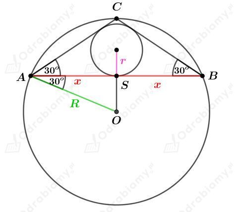

a)
Rysunek:Â
Wiemy, że
Odcinek AC1 jest przekątną sześcianu o krawędzi długości a. Korzystając ze wzoru na długość przekątnej sześcianu mamy:
Obliczmy objętość tego sześcianu. Mamy:
b)Â
Dany jest sześcian o krawędzi długości a, którego pole powierzchni całkowitej wynosi 864 cm2. Mamy stąd:
Na tym sześcianie opisano kulę o promieniu długości R.Â
Rysunek:
Odcinek AC1 jest przekątną tego sześcianu. Korzystając ze wzoru na długość przekątnej sześcianu mamy:
Wyznaczmy objętość tej kuli. Mamy:
Rysunek:Â
Podstawą tego graniastosłupa jest kwadrat, którego pole wynosi 16 cm2. Mamy stąd:Â
Odcinek AC jest przekątną tego kwadratu, czyli
Korzystając z twierdzenia Pitagorasa dla trójkąta ACC1 mamy:
a)
Dana jest kula o promieniu długości 13. W daną kulę wpisano walec o promieniu podstawy długości r i wysokości długości 10.Â
Rysunek:Â
Korzystając z twierdzenia Pitagorasa dla trójkąta BCD otrzymujemy:  Â
Wyznaczmy objętość tego walca. Mamy:Â
b)
Dana jest kula o promieniu długości 5. W daną kulę wpisano walec o promieniu podstawy długości r i wysokości długości H.Â
Rysunek:
Z treści zadania wiemy, że pole powierzchni bocznej tego walca wynosi 48𝜋. Mamy zatem:
Korzystając z twierdzenia Pitagorasa dla trójkąta BCD otrzymujemy:  Â
Zastosujmy podstawienie r2=t, gdzie t≥0. Mamy wtedy:
Wracając do podstawienia mamy:
Uwzględniając to, że r>0 otrzymujemy:Â
Przypadek I. Dla r=3 mamy:
Wyznaczmy objętość takiego walca. Mamy:Â
Przypadek II. Dla r=4 mamy:
Wyznaczmy objętość takiego walca. Mamy:Â
a)
Dany jest stożek o promieniu podstawy długości 6 cm i tworzącej długości l.Â
Dana jest kula o środku w punkcie O i promieniu długości R.Â
Na tym stożku opisano podaną kulę.
Rysunek:Â
Wyznaczmy wartość liczby tg15o. Mamy:
Korzystając ze wzoru na tangens różnicy kątów mamy:Â
Rozważmy trójkąt CSP. Wyznaczmy tangens kąta o mierze 15o tego trójkąta. Mamy:Â
Korzystając z twierdzenia Pitagorasa dla trójkąta ODS mamy:
b)
Dany jest stożek o promieniu podstawy długości r.Â
Dana jest kula o środku w punkcie O i promieniu długości R.Â
Na tym stożku opisano podaną kulę.
Przypadek I
Rysunek:Â
Trójkąt SDP jest trójkątem prostokątnym, czyli
Trójkąt ODP jest trójkątem równoramiennym (ponieważ |OP|=|OD|), czyli
Wyznaczmy cosinus kąta𝛽. Mamy:
Korzystając ze wzorów redukcyjnych mamy:Â
Wyznaczmy objętość danej kuli. Mamy:Â
Przypadek II
Rysunek:
Zauważmy, że
Trójkąt AOP to trójkąt równoramienny, zatem:
Z sumy miar kątów w trójkącie ASP mamy:
Zatem:
Wyznaczmy cosinus kąta𝛽. Mamy:
Wyznaczmy objętość danej kuli. Mamy:Â
a)
Rysunek:Â
Trójkąt ABC jest trójkątem prostokątnym równoramiennym. Mamy zatem
Wyznaczmy długość promienia r okręgu wpisanego w ten trójkąt. Korzystając ze wzoru na długość promienia okręgu wpisanego w trójkąt prostokątny mamy:
Wyznaczmy objętość kuli opisanej na tym stożku mamy:
Wyznaczmy objętość kuli wpisanej w ten stożek mamy:
Wyznaczmy stosunek objętość kuli wpisanej w ten stożek do kuli opisanej na tym stożku. Mamy:
b)
Rysunek:

Korzystając ze związku między długościami boków w trójkącie o kątach 30o, 60o, 90o mamy:
oraz
Zauważmy, że trójkąt AOC jest trójkątem równobocznym, więc
Rozważmy trójkąt ABC. Pole tego trójkąta możemy zapisać na dwa sposoby. Zapiszmy więc równanie:Â
Wyznaczmy objętość kuli wpisanej w ten stożek. Mamy:
Wyznaczmy objętość kuli opisanej na tym stożku. Mamy:
Wyznaczmy stosunek objętość kuli wpisanej w ten stożek do kuli opisanej na tym stożku. Mamy:
a)
Na ostrosłupie opisano kulę o promieniu długości R i polu powierzchni 16𝜋. Mamy stąd:
Rysunek:Â
Korzystając ze związku między długościami boków w trójkącie o kątach 30o, 60o, 90o mamy:
oraz
Korzystając z twierdzenia Pitagorasa dla trójkąta AOS mamy:
Zauważmy, że promień kuli opisanej na tym ostrosłupie jest taki sam jak promień okręgu opisanego na trójkącie ACS.
Obliczając pole trójkąta ACS na dwa sposoby otrzymujemy równanie:Â
więc
Obliczmy pole powierzchni całkowitej tego ostrosłupa. Mamy:
b)
Rysunek:
Zauważmy, że
oraz
Zatem
Korzystając z twierdzenia Pitagorasa dla trójkąta OCP otrzymujemy:
Uwzględniając to, że a>0 mamy:
Dany jest ostrosłup przedstawiony na rysunku:Â
Odcinek AC jest przekątną kwadratu ABCD, więc
Na podanym ostrosłupie opisano kulę o środku w punkcie O i promieniu długości 6.Â
Przypadek I
Naszkicujmy przekrój osiowy przechodzący przez przekątną AC. Mamy:
Korzystając z twierdzenia Pitagorasa dla trójkąta OCP otrzymujemy:
Wyznaczmy długość wysokości H tego ostrosłupa. Mamy:
Wyznaczmy objętość tego ostrosłupa. Mamy:
Przypadek II
Naszkicujmy przekrój osiowy przechodzący przez przekątną AC. Mamy:
Korzystając z twierdzenia Pitagorasa dla trójkąta APO otrzymujemy:
Wyznaczmy długość wysokości H tego ostrosłupa. Mamy:
Wyznaczmy objętość tego ostrosłupa. Mamy:
Dany jest graniastosłup prawidłowy trójkątny. Kulę o środku w punkcie O i promieniu długości R opisano na tym graniastosłupie.
Rysunek:Â
Zauważmy, że
Odcinek SB stanowi 2/3 długości wysokości trójkąta równobocznego ABC. Korzystając ze wzoru na długość wysokości trójkąta równobocznego mamy:
Korzystając z twierdzenia Pitagorasa dla trójkąta SBO otrzymujemy:Â
Dany jest ostrosłup prawidłowy trójkątny. Dana jest kula o środku w punkcie O i promieniu długości R. Podaną kulę opisano na tym ostrosłupie.
Rysunek:Â
Trójkąt BPS jest trójkątem prostokątnym równoramiennym, czyli
Odcinek AP jest wysokością trójkąta równobocznego ABC. Korzystając ze wzoru na długość wysokości trójkąta równobocznego mamy:Â
Zatem
Korzystając z twierdzenia Pitagorasa dla trójkąta AO1S mamy:
Wyznaczmy długość odcinka O1O. Mamy:
Korzystając z twierdzenia Pitagorasa dla trójkąta AO1O mamy:
Wyznaczmy objętość podanego ostrosłupa. Mamy:
Wyznaczmy objętość podanej kuli. Mamy:
Wyznaczmy stosunek objętości podanego ostrosłupa do danej kuli. Mamy: